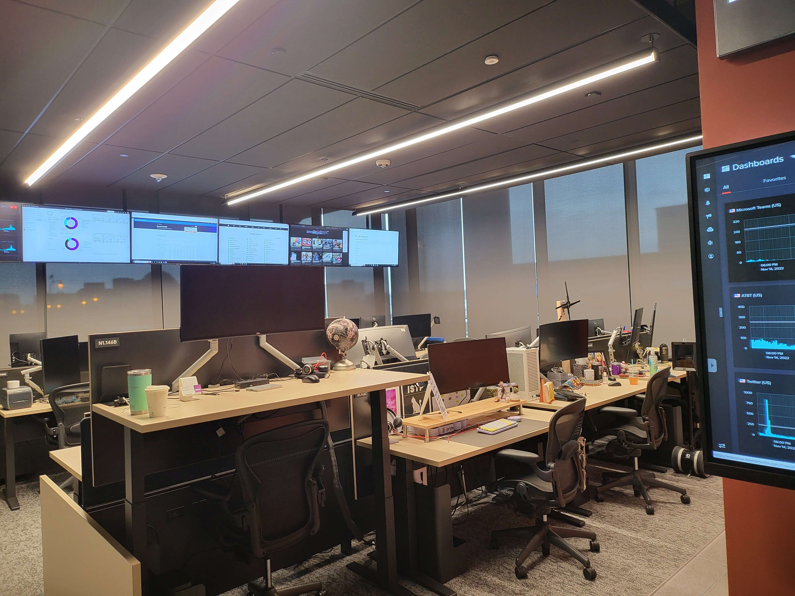

Business Need
Mission Control was created to meet the growing demand for real-time coverage of technology events and news that directly impacts our customers. The platform provides detailed alerts and insights to frontline employees, enabling them to stay informed on technology topics keeping up with the fast-paced nature of technology and the constantly evolving technology landscape.
The platform leverages a combination of technology monitoring solutions to monitor emergent events on the web. Our team of innovation research analysts continuously monitor the latest news and developments in the technology industry, providing real-time insights and alerts to our employees. These alerts are then used by our frontline employees to assist customers with their concerns and resolve issues quickly and effectively. Mission Control is a best-in-class solution that helps our employees stay ahead of the curve and provides them with the information they need to be successful in their roles.
My Role
As the leader of the Mission Control team, my role was to manage the function, oversee the product strategy, and deliver key insights to drive value in the organization. I also worked closely with the team to improve the validity and usefulness of our alerts, ensuring that our employees had access to the most relevant information at all times. This involved coordinating with other teams across the organization to gather and analyze data, as well as developing strategies to stay ahead of emerging trends in the technology industry.

Effectiveness
Mission Control has proven to be an extremely effective tool in supporting our employees and improving customer satisfaction. The real-time research performed by our team has allowed us to catch issues before they become widespread, and our detailed alerts have reduced call handle time and improved issue troubleshooting. This has led to increased efficiency and a better overall experience for our customers. Additionally, Mission Control has proven to be a valuable resource for other teams across the organization, providing valuable insights and supporting our workforce management.
One key aspect of the Mission Control platform is the custom reporting dashboards that the team maintains. These dashboards are designed to promote the value of the work performed by the Mission Control team, tell stories with the data, and keep leadership in the know on the most impactful issues in current tech events. By sharing these dashboards, the team is able to demonstrate the real-world impact of their work and communicate the importance of staying ahead of technology news and events. The dashboards are regularly updated with the latest data and insights, allowing for real-time tracking and analysis of key metrics and trends.
Overall, Mission Control has proven to be a highly effective solution that enables our employees to stay ahead of the curve and provides them with the information they need to be successful in their roles. The combination of technology monitoring, real-time research, and custom reporting dashboards makes Mission Control an indispensable tool for our organization.
